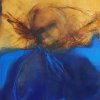
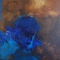
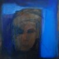
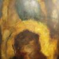
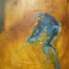
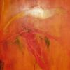

Ne manquez pas Diane Nadeau en exposition solo à la maison de la culture Villebon. Vernissage le dimanche 22 janvier 13h.
Beloeil, du 10 janvier au 19 février.
Appréciez l'art visuel et ses inspirations musicales lors de la Fête des Arts à St-Basile-le-Grand. L'exposition comprend des œuvres peintres accompagnées d'extraits musicaux.
St-Basile, du 30 sept. au 2 octobre.
Les galleries de photos sont mises à jour: voir nos peintures et sculptures.
Nous présentons très bientôt une exposition conjointe à la maison de la culture de Saint-Antoine-sur-Richelieu.
St-Antoine, du 27 mars au 1er mai.
Le printemps annonce de nouvelles expositions pour nos artistes.
L'exposition au salon des arts visuels de Brossard a lieu du 23 au 25 avril.
De nouvelles œuvres de Diane Nadeau sont ajoutées à la section peinture.
  
Quand l'inconscient s'exprime...
est une exposition jointe de Diane Nadeau et Evelyne Bouchard à la galerie d'art [arto] de Saint-Jean-sur-Richelieu.
L'exposition débute le 4 février et se poursuit jusqu'au 28 février.
[arto]: Calendrier | Directions
Le mercredi 25 novembre débutait à Granby l'exposition des membres de Boréart. Vous y trouverez, en autres, des œuvres de Diane Nadeau.
L'exposition a lieu jusqu'au 13 décembre.
Une brochette d'artistes reconnus d'Otterburn Park, plus de 70 œuvres exposées dans un décor urbain et chaleureux, des prestations musicales et bien plus encore!
De nouvelles œuvres de Diane Nadeau sont ajoutées à la section peinture.
  
Le dimanche 13 juillet débutait l'exposition de sculptures Nature et Création au Vignoble Le Domaine des Côtes d'Ardoise. Vous y trouverez, en autres, des oeuvres de Jacques Rioux, et ce...
...jusqu'au 14 octobre!
Ne manquez pas la chance de faire connaisance avec nos artistes. Cette année encore, à l'occasion de Fugue en Art Majeur, vous pourrez visiter leurs ateliers.
En juin, venez découvrir leur monde!
© 2007–2012 Jacques Rioux & Diane Nadeau
Design du site par Julien Rioux